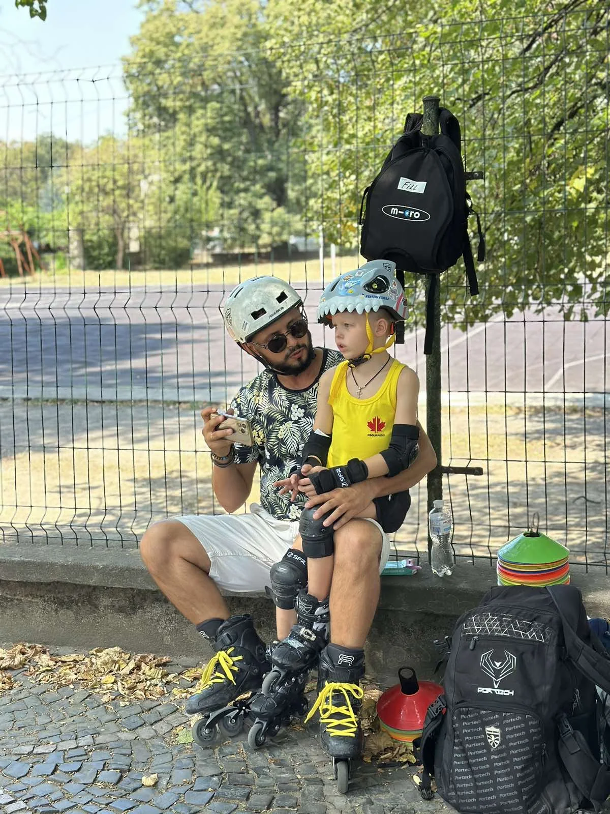

Засновник · тренер · організатор
Віктор Камінський
Заснував Roller Friends у 2020 році. Працює з дітьми від трьох років, підлітками й дорослими: допомагає впевнено стати на ролики, закласти правильну базу та перейти до складніших технік.
Його головний напрям — фріскейт. Також Віктор розвивається у слаломі та слайдах, готує учнів до змагань і організовує міські покатушки, виїзди та спортивні події.
2020 рік заснування школи3+ вік наймолодших учнівДіти й дорослі усі основні формати